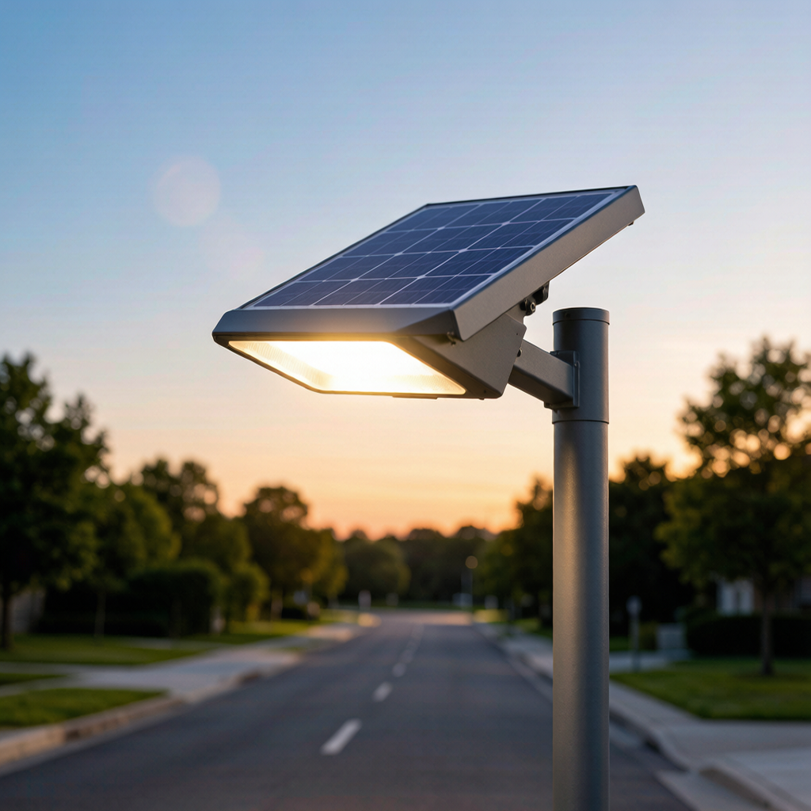
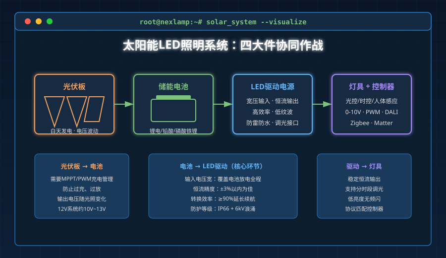
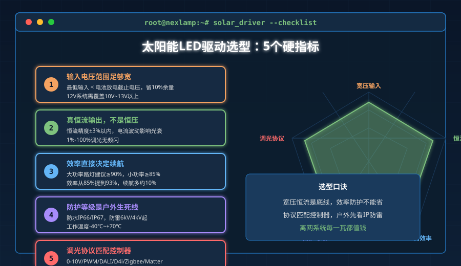

2026年的照明行业，有一个被低估的赛道正在 quietly 爆发：太阳能与离网照明。
全球市场研究机构的数据显示，2026年全球太阳能照明系统市场规模预计达到136.3亿美元，到2034年有望增长到331.4亿美元，年复合增长率超过11%。更值得关注的是，在所有太阳能照明系统里，离网（Off-grid）方案占比接近69%——这意味着大多数太阳能灯并不是挂在城市电网上"省电"，而是根本不依赖电网。
对LED驱动电源厂商来说，这是一个全新的战场。传统驱动面对的是稳定的220V市电，而太阳能LED驱动面对的是：白天光伏板输出波动、锂电池充放电曲线变化、夜晚负载从零到满载突变、户外雷击和台风的考验。
如果你正在做太阳能路灯、庭院灯、景观亮化，或者打算给海外项目供货，这篇文章会告诉你：离网场景下，驱动电源到底该怎么选。
太阳能LED系统的"四大件"
一个完整的太阳能LED照明系统，核心只有四个模块：
| 模块 | 作用 | 对驱动的要求 |
|---|---|---|
| 光伏板 | 白天发电 | 输出电压随光照变化，需要MPPT或PWM充电管理 |
| 电池 | 储能 | 锂电池/铅酸/磷酸铁锂，电压平台不同（12V/24V/48V） |
| LED驱动 | 把电池直流电转为LED稳定电流 | 宽压输入、恒流精度、高效率、低纹波 |
| 控制器/智能模块 | 时控、光控、调光、联网 | 协议兼容（0-10V/PWM/DALI/Zigbee） |
很多人以为太阳能灯就是"光伏板+灯"，其实驱动电源才是决定光效稳定性和寿命的关键。光伏板选小了只是亮度不够，驱动选错了会直接烧毁灯珠或让系统三天两头离线。

太阳能LED驱动的5个硬指标
1. 输入电压范围要足够宽
市电驱动通常只接受180V—240V输入。但太阳能系统里，电池电压会在放电过程中持续下降：
- 12V锂电池满电约12.6V，放到20%只剩约10V；
- 24V系统则从25.2V掉到20V左右。
如果驱动的输入电压范围不够宽，灯还没点多久就会因为电池掉压而闪烁或熄灭。选型时要看最低输入电压是否低于电池放电截止电压，最好留10%以上余量。
2. 必须是真恒流，不是恒压
太阳能系统最忌讳"电压够了就行"。LED是电流驱动器件，电流波动10%，光输出可能波动20%，寿命会大幅缩短。
太阳能LED驱动一定要选恒流输出，并且恒流精度建议在±3%以内。如果项目要求调光，还要确认驱动在1%—100%亮度范围内都能维持恒流特性，低亮度下不能出现频闪。
3. 效率直接决定续航
离网系统每一瓦电都很珍贵。驱动效率从85%提升到93%，同样电池容量下续航时间能多出来将近10%。
对于户外大功率场景（比如太阳能路灯），建议选效率**≥90%**的驱动；小功率庭院灯可以适当放宽到≥85%，但低于80%的基本不建议用。
4. 防护等级是户外生死线
太阳能灯基本都在户外，防水防尘防雷一个都不能少：
- 防水：至少IP65，路灯建议IP66或IP67；
- 防雷：按IEC 61000-4-5标准，至少6kV/4kV浪涌防护，沿海多雷区建议10kV/6kV；
- 温度：户外夏天壳体温度可能超过70℃，驱动要能支持-40℃到+70℃工作。
5. 调光协议要和控制器 matched
现在的太阳能路灯已经不满足于"天黑亮、天亮灭"，而是要分时段调光：前半夜100%、凌晨50%、天亮前30%。这就需要驱动支持调光协议。
常见选择：
- 0-10V/PWM：成本低，户外路灯最常见；
- DALI-2/D4i：适合需要远程监控和智慧管理的大项目；
- Zigbee/Matter：适合庭院灯、景观亮化等需要组网控制的场景。

3个常见翻车点
翻车点1：用普通LED驱动直接接太阳能
这是最典型的错误。普通12V恒压驱动接在电池上，白天电压13V以上可能过压保护，晚上电压掉到11V以下又带不动负载。结果灯时亮时灭，电池还被反复折腾。
正确做法：用专为太阳能系统设计的宽压恒流驱动，或者把驱动和控制器做成一体化方案。
翻车点2：只看功率不看电流匹配
有人觉得"100W太阳能系统配100W驱动就行"。但LED的驱动电流和串并联方式密切相关。同样是50W LED，10串5并和5串10并对驱动输出电压、电流的要求完全不同。
正确做法：先定灯珠方案（串并结构），再反推选驱动电流和电压，而不是反过来。
翻车点3：忽视电池类型和充电曲线
铅酸、三元锂、磷酸铁锂的充电截止电压、放电平台都不一样。如果控制器和驱动没有针对电池类型做优化，轻则续航打折，重则过充起火。
正确做法：确认系统支持电池类型，并设置正确的充放电保护参数。
2026年下半年选型建议
结合近期市场趋势和项目经验，给几类典型场景的选型建议：
| 场景 | 推荐方案 | 关键参数 |
|---|---|---|
| 农村道路/偏远地区路灯 | 太阳能一体化路灯 + 恒流驱动 | 12V/24V输入，40W—100W，IP66，6kV浪涌 |
| 景观亮化/庭院灯 | 低压DC驱动 + Zigbee/Matter控制 | 12V—24V宽压，0.1%—100%调光，IP65 |
| 智慧园区/市政项目 | D4i数据驱动 + 太阳能+市电互补 | 远程监控、能耗上报、故障预警 |
| 应急/临时照明 | 便携太阳能灯 + 模块化驱动 | 轻便、可快速部署、宽温工作 |
写在最后
太阳能LED照明正在从"应急替代方案"变成"主动选择方案"。无论是非洲农村的电气化项目、东南亚的乡村道路，还是中国沿海的智慧路灯、欧洲的商业园区，离网照明都在证明：没有电网的地方，也可以有好光。
而作为这个系统的核心，LED驱动电源的任务也从"把220V变成36V"升级为"在不稳定直流输入下，持续输出稳定、高效、长寿命的电流"。
NEXLAMP目前的主产品线虽然集中在市电智能驱动（Tuya Zigbee 7W—400W），但面向2026年下半年，我们已经在测试新一代宽压DC输入的太阳能智能驱动方案，覆盖12V/24V平台，支持0-10V/PWM调光和Zigbee/Matter无线接入。有项目需求可以直接联系我们，按需定制。
一句话总结：太阳能LED驱动不是普通驱动加个太阳能板，而是要在宽压、高效、恒流、防护、调光五个维度重新设计。选型时别只看瓦数，要看它能不能熬过没有电网的夜晚。
关于NEXLAMP：耐利普科技专注于智能照明驱动与控制系统，提供7W—400W全功率段LED驱动、灯具及整体解决方案，服务全球300+工程项目。联系方式：刘先生 13825496855，www.nexlamp.com。